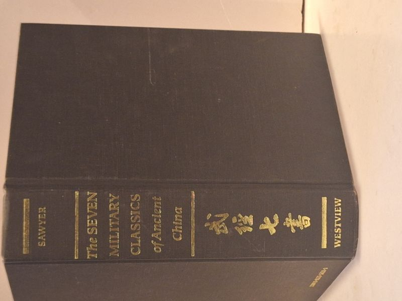

The Seven Military Classics of Ancient China
Sawyer, Ralph D. (translation and commentary), with Mei-chun Sawyer · Westview Press, Boulder, Colorado, 1993

C$50 · Very Good condition
Westview Press, Boulder / San Francisco / Oxford, 1993. Fifth printing of the standard scholarly translation of the Wu ching ch'i shu - the canonical seven military classics of ancient China that for over a millennium constituted the official military examination texts. Translation and commentary by Ralph D. Sawyer, with Mei-chun Sawyer. Includes Sun Tzu's Art of War alongside the six other classics: Methods of the Ssu-ma; T'ai Kung's Six Secret Teachings; the Wei Liao-tzu; the Three Strategies of Huang Shih-kung; and the Questions and Replies between T'ang T'ai-tsung and Li Wei-kung. Part of the 'History and Warfare' series. Hardcover, black cloth boards with gilt Chinese characters (the title rendered in Wu ching ch'i shu) and gilt English title on spine; 'SAWYER' at head, 'WESTVIEW' at foot. Boards clean and tight; gilt bright. 'The paper used in this publication meets the requirements of the American National Standard for Permanence of Paper for Printed Library Materials Z39.48-1984.' ISBN 0-8133-1228-0. LCCN 92-39146.
Details
- Publisher: Westview Press, Boulder, Colorado, 1993
- Binding: Hardcover
- Edition: First Edition, 5th Printing
- Condition: Very Good
- ISBN: 0-8133-1228-0
- Category: Military